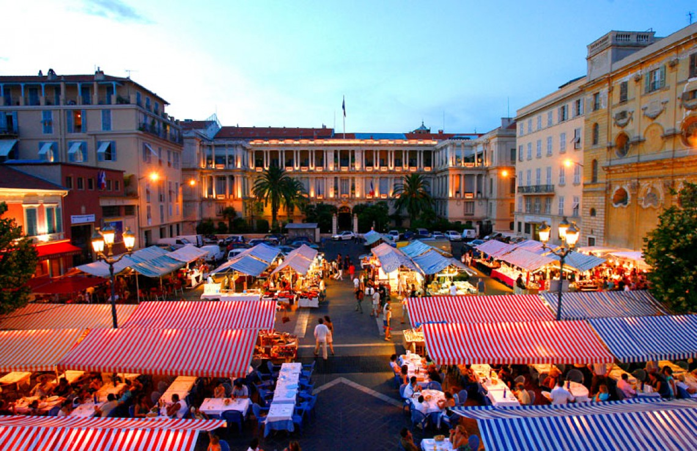
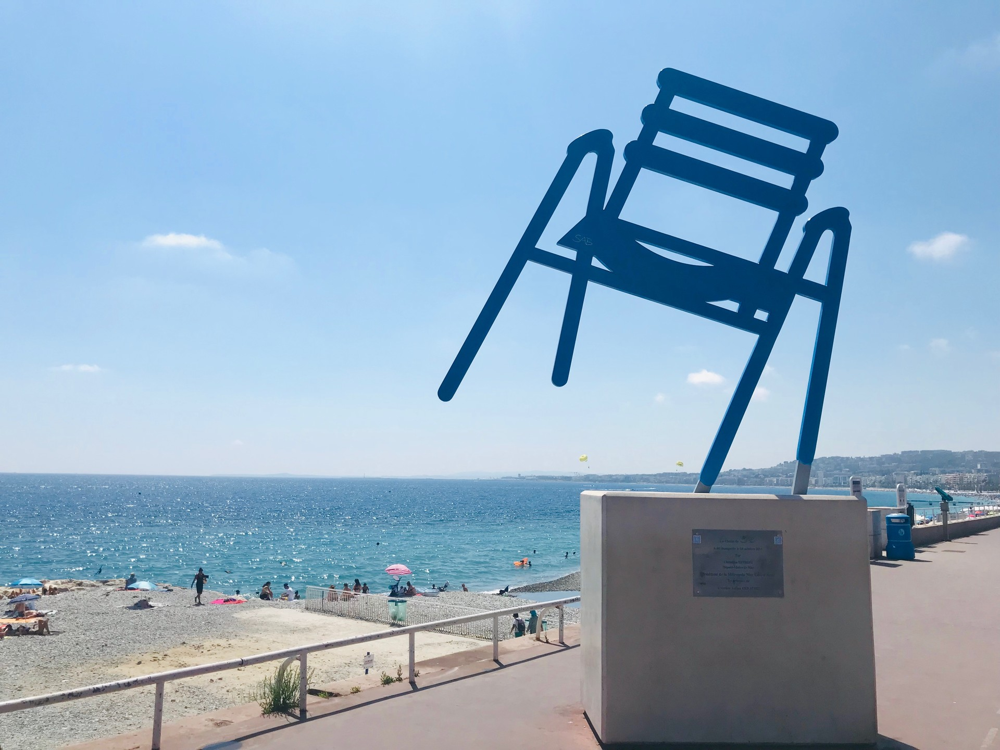
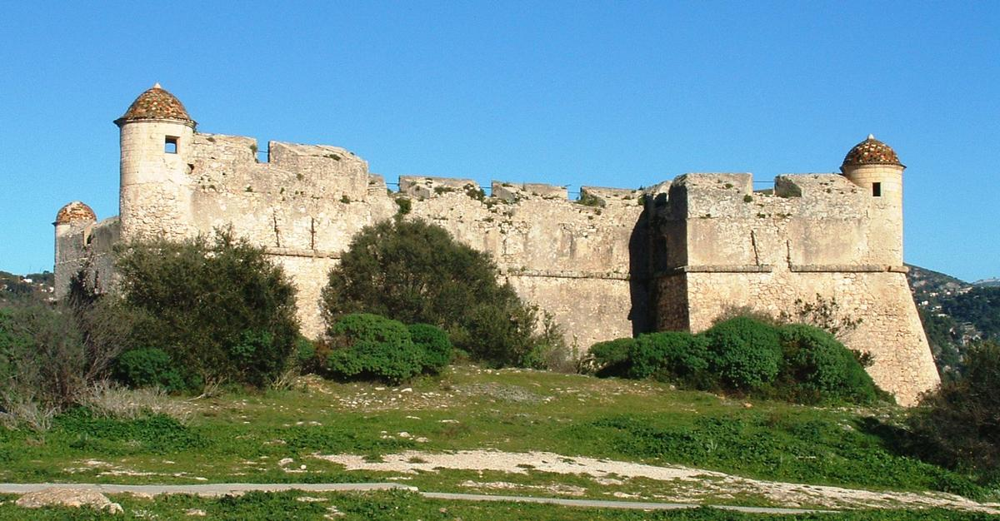
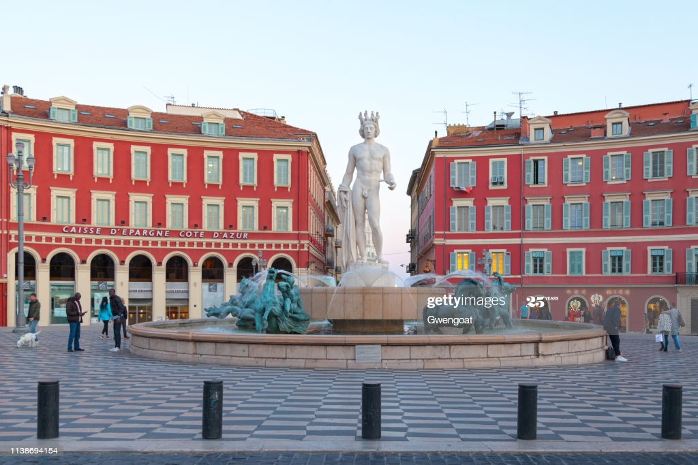
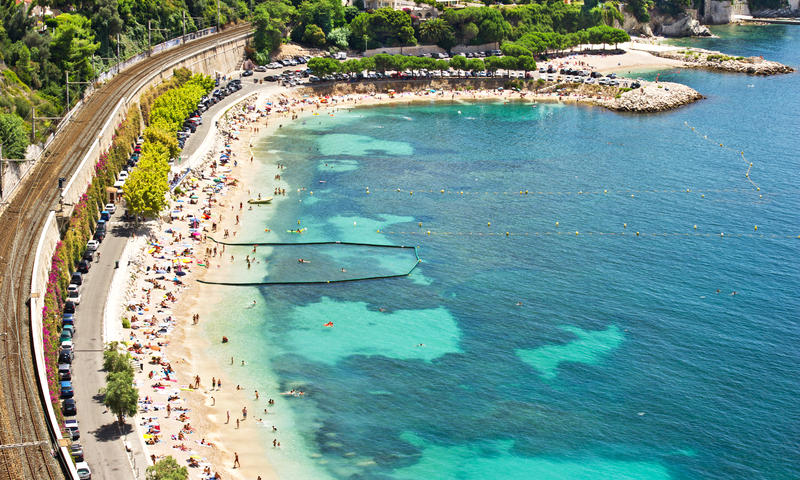
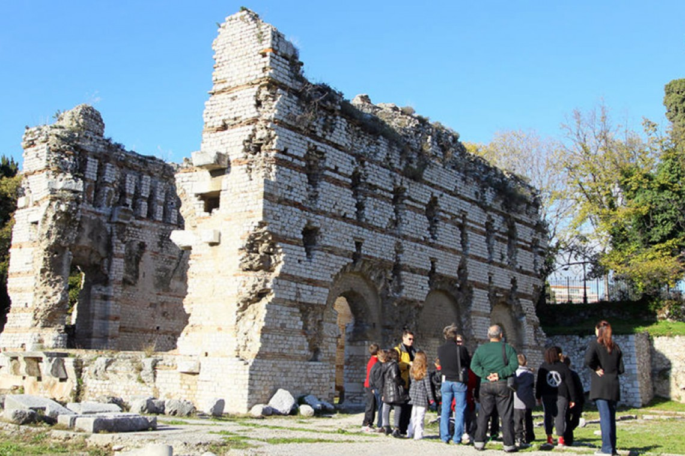
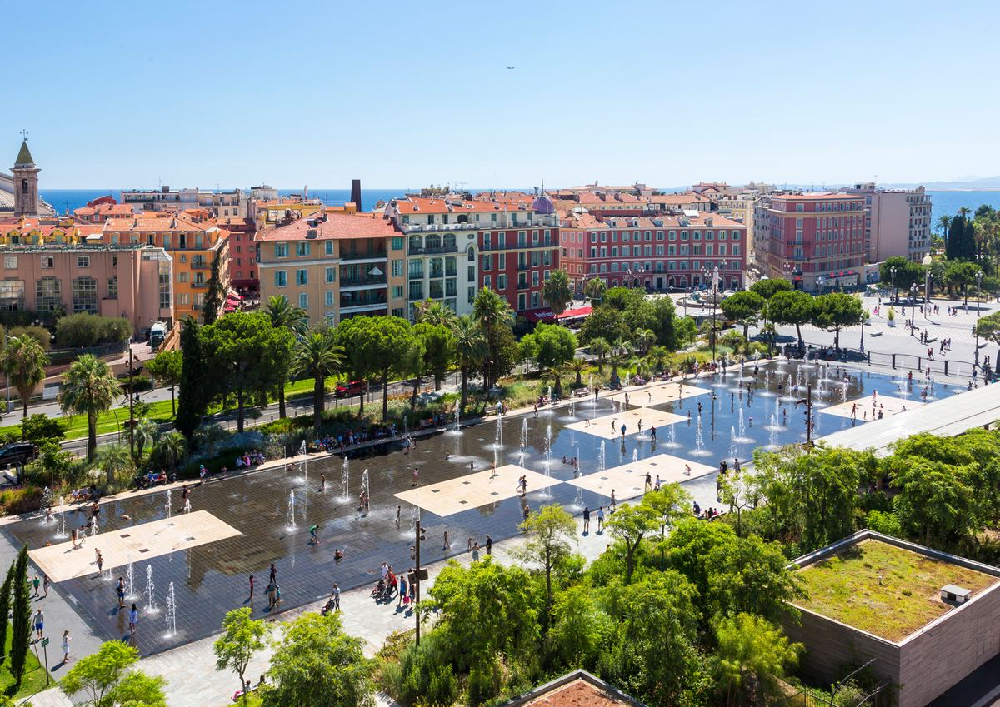
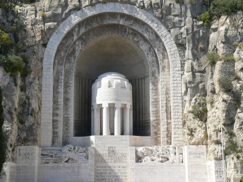

GALERÍA
PLAZAS
PLAYAS
VIAJE EN EL TIEMPO
COURS SALEYA
PASEO DE LOS INGLESES
FORT DU MONT ALBAN
FOUNTAIN OF THE SUN
PLAGE DES MARINIERES
MUSEE D'ARCHEOLOGIE
PROMENADE DU PAILLON
PORT LYMPIA
MONUMENT AUX MORTS